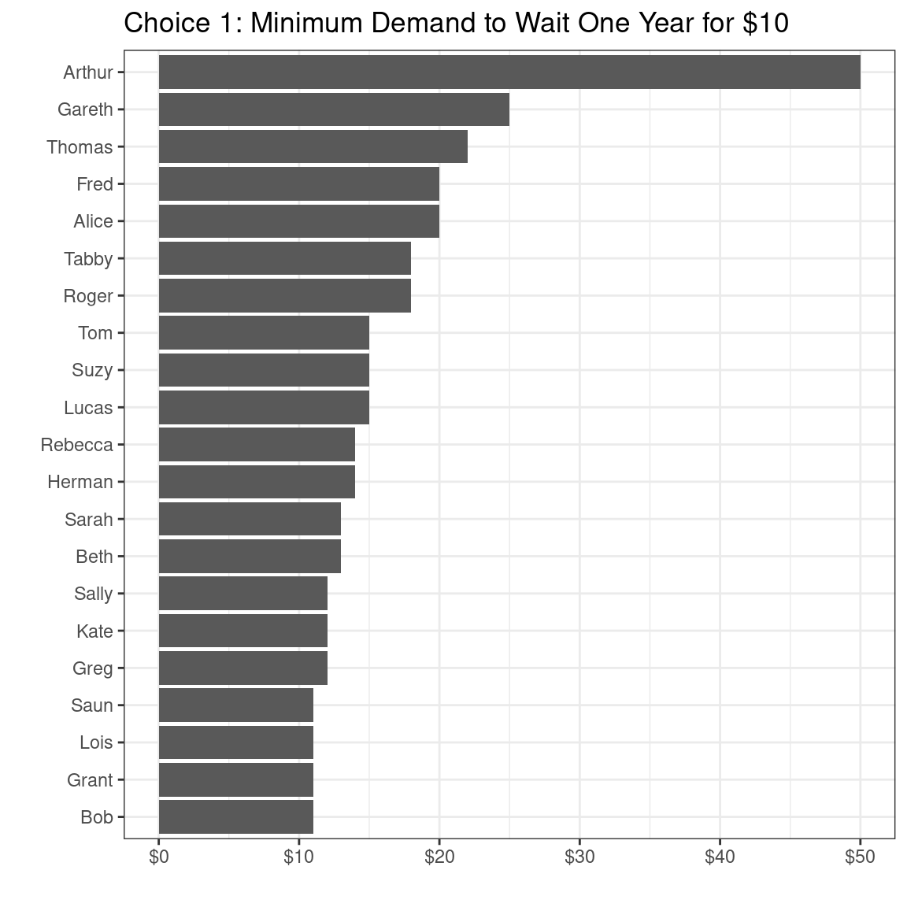
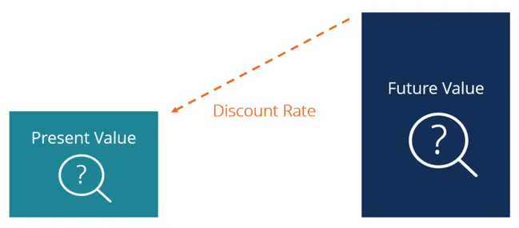
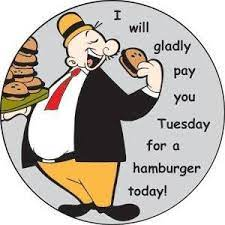
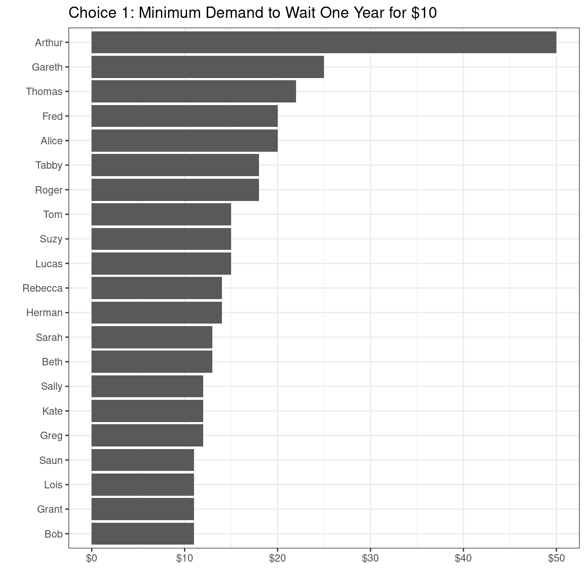
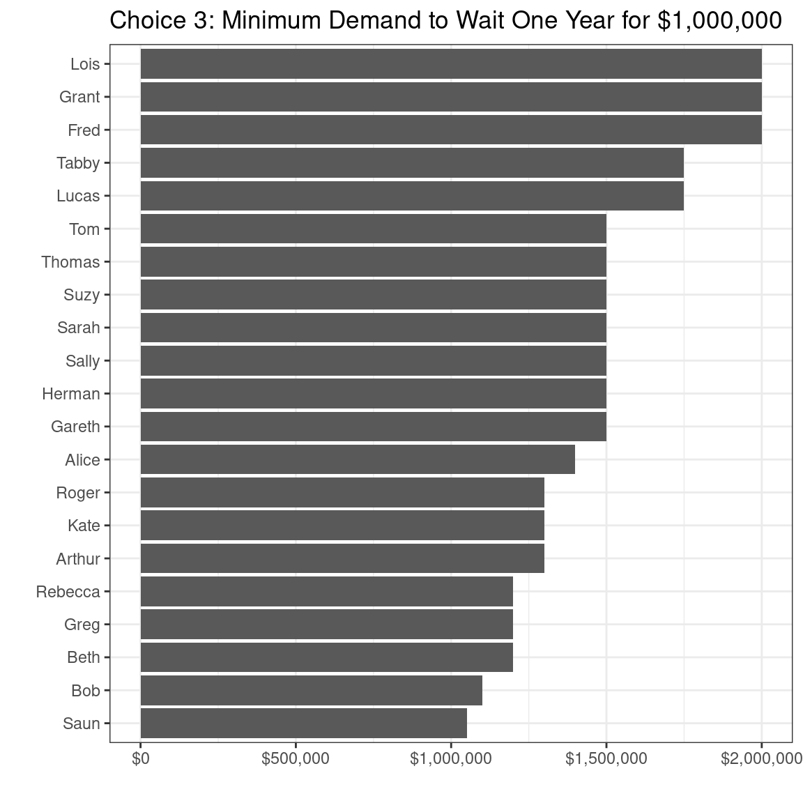
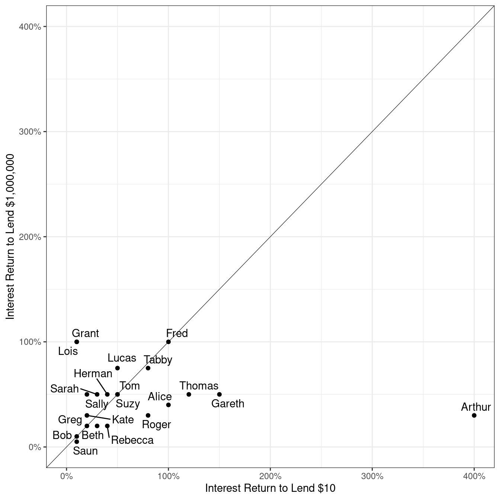

III. Designing an Environmental Policy
Complicating Factors in Environmental Policymaking
Justin Leinaweaver (Spring 2024)
Risk aversion (or risk acceptance)
Temporal discounting and uncertainty
Collective action problems and free-riding
Inequality
Greenwashing


$10 now or wait one year for $X?
$1,000 now or wait one year for $X?
$1 million now or wait one year for $X?




Why are environmental problems so much harder to solve than other types of policy problem? (47-53)
What are the key policy design lessons we need to address these uncertainties? (53-62)
How does uncertainty complicate your efforts to address your specific environmental problem?
Readings in Syllabus
Submit to Canvas before class: